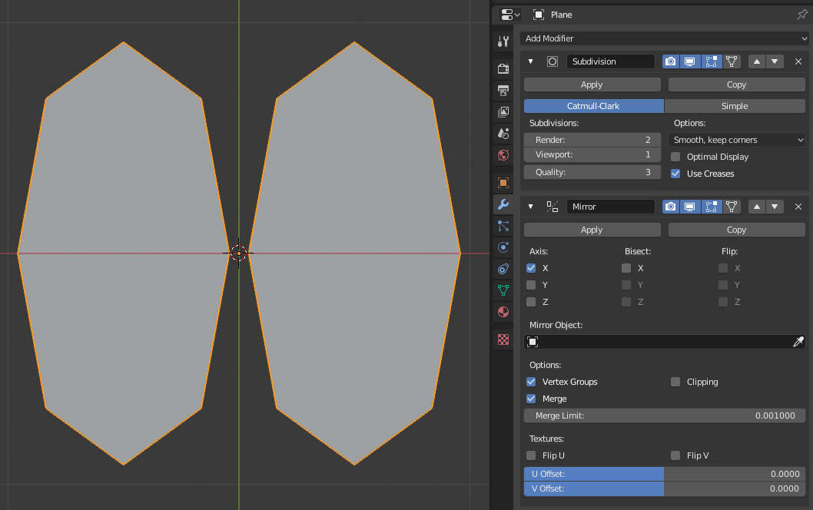
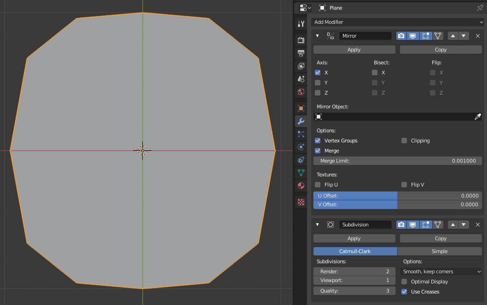

Introduction¶
Modifiers are automatic operations that affect an object’s geometry in a non-destructive way. With modifiers, you can perform many effects automatically that would otherwise be too tedious to do manually (such as subdivision surfaces) and without affecting the base geometry of your object.
They work by changing how an object is displayed and rendered, but not the geometry which you can edit directly. You can add several modifiers to a single object to form The Modifier Stack and Apply a modifier if you wish to make its changes permanent.

Modifiers menu.
They can be added to the active object using the Add Modifier drop-down menu at the top of their properties tab. New modifiers are always added at the bottom of the stack (i.e. will be applied last).
There are four types of modifiers:
- Modify
- These are tools similar to the Deform ones (see below), however, they usually do not directly affect the geometry of the object, but some other data, such as vertex groups.
- Generate
- These are constructive/destructive tools that will affect the whole topology of the mesh. They can change the general appearance of the object, or add new geometry to it…
- Deform
- Unlike Generate ones above, these only change the shape of an object, without altering its topology.
- Simulate
- Those represent physics simulations. In most cases, they are automatically added to the modifiers stack whenever a Particle System or Physics simulation is enabled. Their only role is to define the position in the modifier stack from which is taken the base data for the simulation they represent. As such, they typically have no attributes, and are controlled by settings exposed in separate sections of the Properties editor.
Interface¶
Panel layout (Subdivision Surface as an example).
Each modifier’s interface shares the same basic components, see Fig. Panel layout (Subdivision Surface as an example)..
At the top is the panel header. The icons each represent different settings for the modifier (left to right):
- Expand (down/right arrow icon)
- Collapse modifier to show only the header and not its options.
- Type
- An icon as a quick visual reference of the modifier’s type.
- Name
- Every modifier has a unique name per object. Two modifiers on one object must have unique names, but two modifiers on different objects can have the same name. The default name is based off the modifier type.
- Render (camera icon)
- Toggle visibility of the modifier’s effect in the render.
- Show in viewport (screen icon)
- Toggle visibility of the modifier’s effect in the 3D View.
- Show in Edit Mode (vertices-square icon)
- Display the modified geometry in Edit mode, as well as the original geometry which you can edit.
- Show on cage (vertices-triangle icon) – Meshes only
Depends on the previous setting, if enabled, the modified geometry can also be edited directly, instead of the original one.
Warning
While it shows edited items in their final, modified positions, you are still actually editing original data. This can lead to weird and unpredictable effects with some tools, and should be disabled whenever you need to perform complex or precise editing on the mesh.
- Apply On Spline Points (point-surface icon) – Curves, Surfaces and Texts only
Apply the whole modifier stack up to and including that one on the curve or surface control points, instead of their tessellated geometry.
Note
By default, curves, texts and surfaces are always converted to mesh-like geometry before that the modifier stack is evaluated on them.
- Move (up/down arrow icon)
- Move the modifier up/down in the stack.
- Delete (
Xicon) - Delete the modifier.
Note
The Square, Triangle and Surface icons may not be available, depending on the type of object and modifier.
Below the header are three buttons:
- Apply
- Makes the modifier “real”: converts the object’s geometry to match the applied modifier’s results, and deletes the modifier.
- Apply as Shape Key
Stores the result of that modifier in a new relative shape key. This is only available with modifiers that do not affect the topology (typically, Deform modifiers only).
Note
Even though it should work with any geometry type that supports shape keys, currently it will only work with meshes.
- Copy
- Creates a duplicate of the modifier just below current one in the stack.
Warning
Applying a modifier that is not first in the stack will ignore the stack order (it will be applied as if it was the first one), and may produce undesired results.
Below this header, all of the options unique to each modifier will be displayed.
The Modifier Stack¶
Modifiers are a series of non-destructive operations which can be applied on top of an object’s geometry. They can be applied in just about any order the user chooses.
This kind of functionality is often referred to as a “modifier stack” and is also found in several other 3D applications.
In a modifier stack the order in which modifiers are applied has an effect on the result. Fortunately modifiers can be rearranged easily by clicking the convenient up and down arrow icons. For example, the image below shows Subdivision Surface and Mirror modifiers that have switched places.

The Mirror modifier is the last item in the stack and the result looks like two surfaces. |

The Subdivision surface modifier is the last item in the stack and the result is a single merged surface. |
{kind=link}
{kind=link}
Modifiers are calculated from top to bottom in the stack. In this example, the desired result (on right) is achieved by first mirroring the object, and then calculating the subdivision surface.
Example¶

In this example a simple subdivided cube has been transformed into a rather complex object using a stack of modifiers.